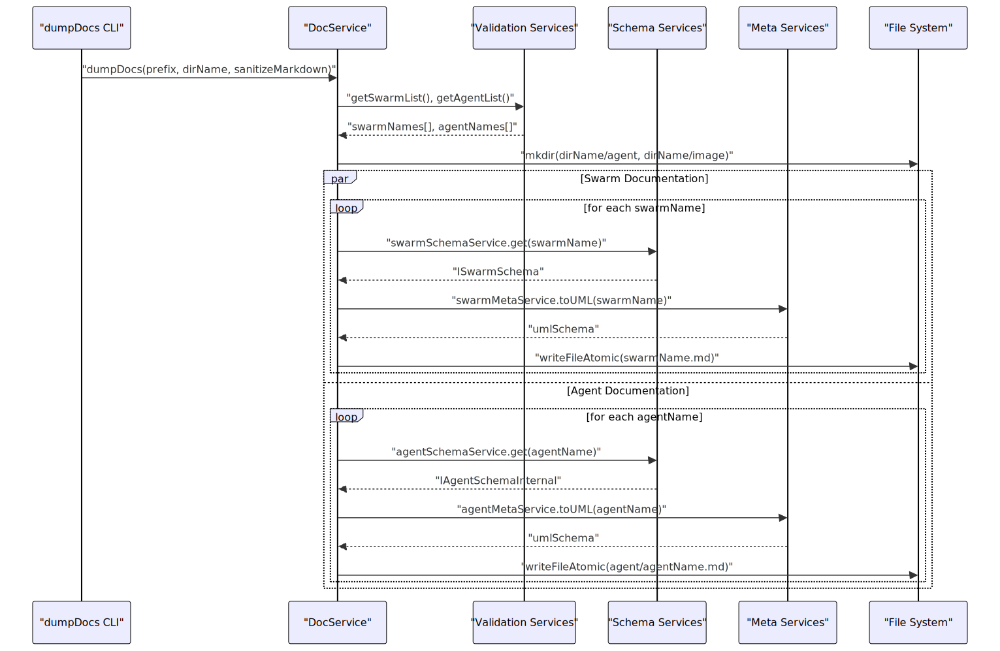

The Documentation Generation system provides automated creation of comprehensive documentation for agents, swarms, and system performance metrics. This system generates markdown files with embedded UML diagrams, organizing them in a structured directory layout for developer consumption.
For information about agent schema management, see Schema Services. For details on performance monitoring data collection, see Performance Monitoring.
The DocService class serves as the central orchestrator for all documentation generation activities, utilizing dependency injection to access various schema and validation services.

The DocService maintains a thread pool with configurable concurrency (THREAD_POOL_SIZE = 5) to manage parallel documentation generation tasks while balancing performance and resource usage.
The documentation generation process follows a structured workflow that validates schemas, creates directories, and generates both swarm and agent documentation concurrently.

The dumpDocs method creates a structured directory layout with subdirectories defined in SUBDIR_LIST = ["agent", "image"], organizing agent markdown files and UML diagram images separately.
The system integrates with PlantUML through the GLOBAL_CONFIG.CC_FN_PLANTUML function to generate visual schema representations for both swarms and agents.

For swarm documentation, UML diagrams are generated with the filename pattern swarm_schema_{swarmName}.svg, while agent diagrams use agent_schema_{agentName}.svg. These images are referenced in the markdown files using relative paths.
Agent documentation files are generated with comprehensive sections covering all aspects of agent configuration and capabilities.
| Section | Content | Schema Source |
|---|---|---|
| Main Prompt | Agent's primary prompt text | agentSchema.prompt |
| System Prompt | Static, dynamic, and regular system prompts | agentSchema.system* |
| Dependencies | Other agents this agent depends on | agentSchema.dependsOn |
| MCP Integration | Model Context Protocol configurations | agentSchema.mcp |
| Tools | Function definitions and parameters | agentSchema.tools |
| Storages | Storage resources and configurations | agentSchema.storages |
| States | State management resources | agentSchema.states |
| Wiki Lists | Wiki resource integrations | agentSchema.wikiList |
| Callbacks | Event callback configurations | agentSchema.callbacks |
The writeAgentDoc method resolves dynamic content by calling functions with "docs" as the clientId parameter to generate documentation-specific content without affecting runtime behavior.
The system provides dual-mode performance documentation covering both system-wide and client-specific metrics.

The dumpPerfomance method creates system-wide performance snapshots, while dumpClientPerfomance generates client-specific performance data with timestamped filenames for historical tracking.
The documentation system integrates with the CLI through the dumpDocs command, providing configurable options for output customization.

The CLI performs comprehensive validation before documentation generation, checking all registered agents and swarms, and verifying dependency relationships through dependsOn properties.
Documentation generation utilizes a controlled concurrency model to balance performance with resource consumption.
| Configuration | Value | Purpose |
|---|---|---|
THREAD_POOL_SIZE |
5 | Maximum concurrent documentation tasks |
THREAD_POOL_DELAY |
0 | Delay between task executions |
| Execution Method | execpool |
Function wrapper for concurrency control |
The writeSwarmDoc and writeAgentDoc methods are wrapped with execpool to ensure controlled parallel execution, preventing resource exhaustion during large-scale documentation generation.